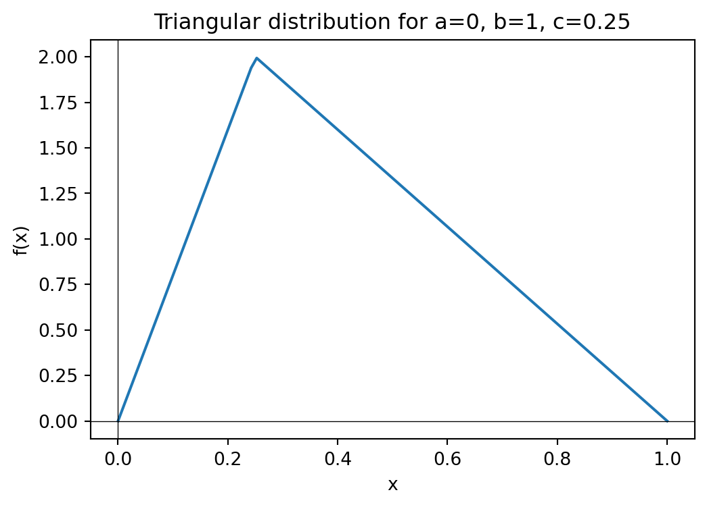

7 Inverse Transform Sampling
For continuous random variables, we can use a powerful and elegant method called inverse transform sampling that provides a systematic way to generate samples from any distribution whose cumulative distribution function (CDF) we can compute and invert.
Consider a continuous random variable \(X\) with probability density function \(f(x)\). Let \(U\) be a random variable with uniform distribution \(U(0, 1)\).
Theorem 7.1 (Inverse Transform Sampling): Let \(F(x)\) be the cumulative distribution function of \(X\). If \(F(x)\) is strictly increasing and continuous, then the random variable \(Y = F^{-1}(U)\) has the same distribution as \(X\).
Proof. Let \(F(x)\) be the cumulative distribution function of \(X\). The cumulative distribution function of \(U\) is given by
\[\begin{align*} \mathbb{P}(U \leq u) &= u. \end{align*}\]
Since \(F(x)\) is strictly increasing and continuous, it has an inverse \(F^{-1}(u)\).
The cumulative distribution function of \(Y = F^{-1}(U)\) is given by
\[\begin{align*} \mathbb{P}(Y \leq y) &= \mathbb{P}(F^{-1}(U) \leq y) \\ &= \mathbb{P}(U \leq F(y)) \\ &= F(y). \end{align*}\]
Thus, \(Y\) has the same distribution as \(X\). \(\blacksquare\)
Algorithm
The inverse transform sampling method can be used to sample from any probability distribution \(X\) for which we can compute the cumulative distribution function \(F(x)\) and its inverse \(F^{-1}(u)\). The algorithm to sample from a probability distribution using the inverse transform sampling method is as follows:
- Generate a random number \(u\) from the uniform distribution \(U(0, 1)\).
- Compute \(x = F^{-1}(u)\).
- Return \(x\).
Generalized Inverse
Even when \(F(x)\) is not strictly increasing, we can still use the inverse transform sampling method by using the generalized inverse of \(F(x)\). The generalized inverse of \(F(x)\) is defined as
\[\begin{align*} F^{-1}(u) = \inf\{x : F(x) \geq u\}. \end{align*}\]
You can think of \(\inf\) as \(\min\) for simplicity. This is what we are doing in the discrete case!
7.1 Exponential Distribution
Let \(X\) be a random variable with exponential distribution with rate parameter \(\lambda > 0\). The probability density function of \(X\) is given by
\[\begin{align*} f(x) = \lambda e^{-\lambda x}, \quad x \geq 0. \end{align*}\]
The cumulative distribution function of \(X\) is given by
\[\begin{align*} F(x) = 1 - e^{-\lambda x}, \quad x \geq 0. \end{align*}\]
To find the inverse of the cumulative distribution function, we solve \(u = F(x) = 1 - e^{-\lambda x}\) for \(x\):
\[\begin{align*} u &= 1 - e^{-\lambda x} \\ \Rightarrow e^{-\lambda x} &= 1 - u \\ \Rightarrow -\lambda x &= \log(1 - u) \\ \Rightarrow x &= -\frac{1}{\lambda} \log(1 - u) \end{align*}\]
Therefore, the inverse of the cumulative distribution function is given by
\[\begin{align*} F^{-1}(u) = -\frac{1}{\lambda} \log(1 - u). \end{align*}\]
Sampling Algorithm
To generate an exponential random variable with rate \(\lambda\):
- Generate \(u \sim U(0,1)\).
- Return \(x = -\frac{1}{\lambda} \log(1 - u)\).
Note that since \(1-u\) is also uniformly distributed on \((0,1)\) when \(u \sim U(0,1)\), we can simplify this to \(x = -\frac{1}{\lambda} \log(u)\).
7.2 Weibull Distribution
The Weibull distribution is a generalization of the exponential distribution. Let \(X\) be a random variable with Weibull distribution with shape parameter \(k > 0\) and scale parameter \(\lambda > 0\). The probability density function of \(X\) is given by
\[\begin{align*} f(x) = \frac{k}{\lambda} \left(\frac{x}{\lambda}\right)^{k-1} e^{-(x/\lambda)^k}, \quad x \geq 0. \end{align*}\]
The cumulative distribution function is:
\[\begin{align*} F(x) = 1 - e^{-(x/\lambda)^k} \end{align*}\]
Solving for the inverse: \[\begin{align*} u &= 1 - e^{-(x/\lambda)^k} \\ \Rightarrow e^{-(x/\lambda)^k} &= 1 - u \\ \Rightarrow -(x/\lambda)^k &= \log(1 - u) \\ \Rightarrow x &= \lambda[-\log(1 - u)]^{1/k} \end{align*}\]
Sampling Algorithm
To generate a Weibull random variable:
- Generate \(u \sim U(0,1)\).
- Return \(x = \lambda[-\log(1 - u)]^{1/k}\).
7.3 Triangular Distribution
Let \(X\) be a random variable with triangular distribution supported over the interval \([a,b]\) with mode at \(c \in [a,b]\). The triangular distribution has a piecewise linear probability density function that increases linearly from \(a\) to \(c\) and then decreases linearly from \(c\) to \(b\).
Tip
The triangular distribution provides a good example of inverse transform sampling with a piecewise CDF. The inverse function must be computed separately for the two pieces of the distribution, making this a more complex but instructive application of the method.
The inverse transform sampling method can be used to sample from the triangular distribution, though the derivation involves handling the piecewise nature of both the CDF and its inverse.
7.4 Normal Distribution
The standard normal distribution with mean \(0\) and variance \(1\) has the probability density function
\[\begin{align*} f(x) = \frac{1}{\sqrt{2\pi}} e^{-x^2/2}. \end{align*}\]
It is not possible to sample from the normal distribution using the inverse transform sampling method because the cumulative distribution function of the normal distribution does not have a closed-form inverse. However, there are other methods to sample from the normal distribution. One such method is the Box-Muller transform.
The Box-Muller transform is based on the following idea. Consider a 2D random variable \((X, Y)\) with standard normal distribution. The joint probability density function of \((X, Y)\) is given by
\[\begin{align*} f(x, y) = \frac{1}{2\pi} e^{-(x^2 + y^2)/2}, \quad -\infty < x, y < \infty. \end{align*}\]
Let \(R = \sqrt{X^2 + Y^2}\) and \(\Theta = \arctan(Y/X)\) be the polar coordinates of \((X, Y)\). Then notice that \(\Theta\) is uniformly distributed in \([0, 2\pi]\). We can calculate the CDF of \(R\) as follows:
\[\begin{align*} \mathbb{P}(R \leq r) &= \mathbb{P}(X^2 + Y^2 \leq r^2) \\ &= \int_{x^2 + y^2 \leq r^2} f(x, y) \, dx \, dy \\ &= \int_{x^2 + y^2 \leq r^2} \frac{1}{2\pi} e^{-(x^2 + y^2)/2} \, dx \, dy \\ &= \int_{0}^{2\pi} \int_{0}^{r} \frac{1}{2\pi} e^{-\rho^2/2} \rho \, d\rho \, d\theta \\ &= 1 - e^{-r^2/2}. \end{align*}\]
We can invert this to get the inverse CDF of \(R\):
\[\begin{align*} F_R^{-1}(u) = \sqrt{-2 \log(1 - u)}. \end{align*}\]
We can summarize the above discussion in the following theorem.
Theorem 7.2 (Box-Muller Transform): Let \(U_1, U_2\) be independent random variables with uniform distribution \(U(0, 1)\). Let \(R = \sqrt{-2 \log U_1}\) and \(\Theta = 2\pi U_2\). Then, the random variables \(X = R \cos(\Theta)\) and \(Y = R \sin(\Theta)\) are independent and have standard normal distribution.
Note
Note that we are using \(U_1\) instead of \(1-U_1\) in the formula for \(R\). This is because \(1-U_1\) is also uniformly distributed in \([0, 1]\).
This gives us the following algorithm to sample from the normal distribution:
Algorithm
- Generate two random numbers \(u_1, u_2\) from the uniform distribution \(U(0, 1)\).
- Compute \(R = \sqrt{-2 \log u_1}\) and \(\Theta = 2\pi u_2\).
- Compute \(X = R \cos(\Theta)\) and \(Y = R \sin(\Theta)\).
- Return \(X\) (or \(Y\)).
Tip
Note that if \(X\) is a standard normal random variable, then \(Z = \sigma X + \mu\) is a normal random variable with mean \(\mu\) and variance \(\sigma^2\). Thus, to sample from a normal distribution with mean \(\mu\) and variance \(\sigma^2\), we can use the above algorithm to sample from the standard normal distribution and then transform the result using \(Z = \sigma X + \mu\).
7.5 Poisson Distribution
The Poisson distribution with parameter \(\lambda > 0\) is a discrete distribution that models the number of events occurring in a fixed interval of time or space, where \(\lambda\) is the average rate of events. In unit time \(T\), the expected number of events is \(\lambda T\). The probability mass function of the Poisson distribution is given by
\[\begin{align*} \mathrm{Pois}(n) = \frac{e^{-\lambda} \lambda^n}{n!}, \quad n \in \mathbb{N}. \end{align*}\]
The PMF of the Poisson distribution measures the probability of observing \(n\) events in time \(T\).
7.5.1 Relation between Poisson and Binomial Distribution
The Poisson distribution can be approximated by the binomial distribution when the number of trials \(n\) is large and the probability of success \(p\) is small. Let \(X\) be a random variable with binomial distribution with parameters \(n\) and \(p\). As \(n \to \infty\) and \(p \to 0\) such that \(\lambda = np\) remains constant, the PMF of \(X\) converges to the PMF of the Poisson distribution with parameter \(\lambda\). This gives us a simple algorithm to sample from the Poisson distribution:
Algorithm
- Set \(X = 0\).
- Choose \(n\) to be a large integer (something like \(n > 10\lambda\)).
- Set \(p = \lambda/n\).
- Generate \(X\) according to the binomial distribution with parameters \(n\) and \(p\).
Tip
This is a fast method to sample from the binomial approximation to the Poisson distribution and is good when \(\lambda\) is small. For large \(\lambda\), the method described below is more efficient as the number of trials \(n\) required for the binomial distribution to approximate the Poisson distribution becomes very large.
7.5.2 Relation between Poisson and Exponential Distribution
We exploit the relation between the Poisson and exponential distributions to sample from the Poisson distribution. When events occur at a constant rate \(\lambda\), the time between events follows an exponential distribution with rate parameter \(\lambda\). More precisely,
Theorem 7.3 (Inter-arrival Times):
Let \(X_1, X_2, \ldots\) be independent random variables with exponential distribution with rate parameter \(\lambda\). Define
\[\begin{align*} N = \max \left\{ n : X_1 + X_2 + \dots + X_n \le 1 \right\}. \end{align*}\]
Then, \(N\) has Poisson distribution with parameter \(\lambda\).
Proof. The key insight is that \(N\) counts the number of events (exponential inter-arrival times) that occur within a unit time interval. Let \(S_n = X_1 + X_2 + \cdots + X_n\) be the time of the \(n\)-th event. Then:
\[\begin{align*} \mathbb{P}(N = n) &= \mathbb{P}(S_n \leq 1 < S_{n+1}) \\ &= \mathbb{P}(S_n \leq 1) - \mathbb{P}(S_{n+1} \leq 1) \end{align*}\]
Since the sum of \(n\) independent exponential random variables with rate \(\lambda\) follows a gamma distribution with shape parameter \(n\) and rate parameter \(\lambda\), we have \(S_n \sim \text{Gamma}(n, \lambda)\) with PDF:
\[\begin{align*} f_{S_n}(t) = \frac{\lambda^n t^{n-1} e^{-\lambda t}}{(n-1)!} \end{align*}\]
Therefore: \[\begin{align*} \mathbb{P}(S_n \leq 1) = \int_0^1 \frac{\lambda^n t^{n-1} e^{-\lambda t}}{(n-1)!} dt \end{align*}\]
Using integration by parts repeatedly (or recognizing this as the CDF of the gamma distribution), we get:
\[\begin{align*} \mathbb{P}(S_n \leq 1) = 1 - e^{-\lambda} \sum_{k=0}^{n-1} \frac{\lambda^k}{k!} \end{align*}\]
Thus: \[\begin{align*} \mathbb{P}(N = n) &= \left(1 - e^{-\lambda} \sum_{k=0}^{n-1} \frac{\lambda^k}{k!}\right) - \left(1 - e^{-\lambda} \sum_{k=0}^{n} \frac{\lambda^k}{k!}\right) \\ &= e^{-\lambda} \frac{\lambda^n}{n!} \end{align*}\]
This is exactly the PMF of the Poisson distribution with parameter \(\lambda\). \(\blacksquare\)
The Poisson-Exponential connection gives us a simple algorithm to sample from the Poisson distribution:
Algorithm
- Set \(S = 0\) and \(N = 0\).
- While True:
- Generate a random number \(x \sim \mathrm{Exp}(\lambda)\).
- Set \(S = S + x\).
- If \(S > 1\), return \(N\).
- Else, set \(N = N + 1\).
7.5.3 Knuth’s Algorithm
In the above algorithm, we rely on Theorem 7.3 to generate \(X_i \sim \mathrm{Exp}(\lambda)\), we use inverse transform sampling. However, this is inefficient as taking logarithms repeatedly can lead to floating point errors. It is possible to avoid this by using the following insight.
Consider the following set of inequalities:
\[ \begin{align*} X_1 + X_2 + \dots + X_n &< 1 \\ \Leftrightarrow -\dfrac{1}{\lambda} \ln(U_1) + \dfrac{1}{\lambda} \ln(U_2) + \dots + \dfrac{1}{\lambda} \ln(U_n) &< -1 \\ \Leftrightarrow \ln(U_1 U_2 \dots U_n) &> \lambda \\ \Leftrightarrow U_1 U_2 \dots U_n &> e^\lambda \end{align*} \]
This is the motivation behind Knuth’s algorithm:
Algorithm
- Set \(S = 1\) and \(N = 0\).
- While True:
- Generate a random number \(u \sim F(0, 1)\).
- Set \(S = S * u\).
- If \(S > e^{\lambda}\), return \(N\).
- Else, set \(N = N + 1\).